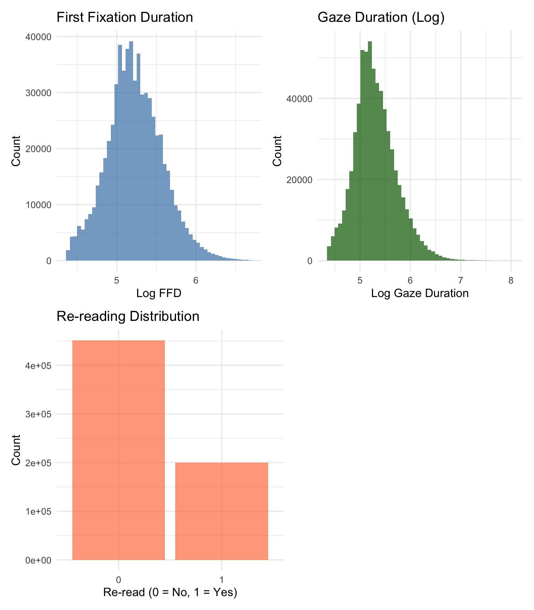
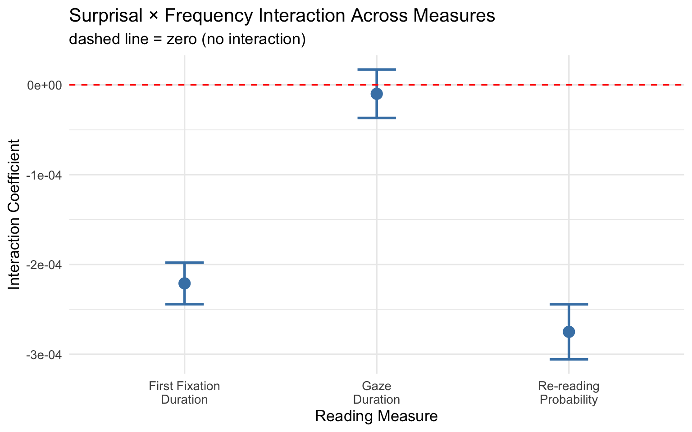

The projects should be numbered consecutively (i.e., in the order in which you began them), and should include for each project a description of the goal, the product (computer program, hand graph, computer graph, etc.), the data, and some interpretation. Reports must be reproducible and of high quality in terms of writing, grammar, presentation, etc.
In portfolio 3, I found a significant interaction between word frequency and GPT-2 suprisal on total dwell time - the processing cost of contextually unexpected words was attenuated at higher frequency levels. However, total dwell time combines both first-pass and re-reading fixations, which are thought to reflect distinct cognitive processes. First-pass measures capture initial word recognition and early lexical access, while re-reading reflects later comprehension difficulty or integration failure. By combining these together, portfolio 3 could not determine when the interaction exerts its influence.
This portfolio address the limitation by decomposing the analysis across three reading measures that tap into different stages of processing.
This portfolio uses the same Onestop dataset as portfolio 2 and 3.
The goal of portfolio 4 is to address the limitation mentioned in portfolio 3 by testing whether the surprisal x frequency interaction observed in portfolio 3 operates at the level of initial word recognition, i.e., first-pass measures, later comprehension processes (re-reading), or both. If the interaction appears only in first-pass measures, it would suggest that frequency buffers against surprisal during early lexical access. If it appears only in re-reading, the buffering effect operates during later integration. If it appears in both, frequency modulates the processing cost of unpredictable words across multiple stages of reading
# Load packages
library(tidyverse)## ── Attaching core tidyverse packages ──────────────────────── tidyverse 2.0.0 ──
## ✔ dplyr 1.1.4 ✔ readr 2.1.5
## ✔ forcats 1.0.1 ✔ stringr 1.5.2
## ✔ ggplot2 4.0.0 ✔ tibble 3.3.0
## ✔ lubridate 1.9.4 ✔ tidyr 1.3.1
## ✔ purrr 1.1.0
## ── Conflicts ────────────────────────────────────────── tidyverse_conflicts() ──
## ✖ dplyr::filter() masks stats::filter()
## ✖ dplyr::lag() masks stats::lag()
## ℹ Use the conflicted package (<http://conflicted.r-lib.org/>) to force all conflicts to become errorslibrary(scales)##
## Attaching package: 'scales'
##
## The following object is masked from 'package:purrr':
##
## discard
##
## The following object is masked from 'package:readr':
##
## col_factorlibrary(patchwork)
library(knitr)
library(psych)##
## Attaching package: 'psych'
##
## The following objects are masked from 'package:scales':
##
## alpha, rescale
##
## The following objects are masked from 'package:ggplot2':
##
## %+%, alphalibrary(sjPlot)##
## Attaching package: 'sjPlot'
##
## The following object is masked from 'package:ggplot2':
##
## set_themelibrary(lme4)## Loading required package: Matrix
##
## Attaching package: 'Matrix'
##
## The following objects are masked from 'package:tidyr':
##
## expand, pack, unpacklibrary(lmerTest)##
## Attaching package: 'lmerTest'
##
## The following object is masked from 'package:lme4':
##
## lmer
##
## The following object is masked from 'package:stats':
##
## steplibrary(broom.mixed)# Load data
ia <- read_csv("~/Desktop/2025-2026/Courses/Data science for psych/Portfolio 1/ia_Paragraph_ordinary.csv")## Rows: 1104883 Columns: 157
## ── Column specification ────────────────────────────────────────────────────────
## Delimiter: ","
## chr (102): participant_id, EYE_REPORTED, EYE_TRACKED, IA_AVERAGE_FIX_PUPIL_S...
## dbl (51): TRIAL_INDEX, IA_AREA, IA_BOTTOM, IA_DWELL_TIME, IA_DWELL_TIME_%, ...
## lgl (4): question_preview, practice_trial, repeated_reading_trial, is_correct
##
## ℹ Use `spec()` to retrieve the full column specification for this data.
## ℹ Specify the column types or set `show_col_types = FALSE` to quiet this message.We apply the same cleaning steps as portfolio 3 - filtering out practice trials and repeated readings, converting variables to numeric, and removing extreme values. For this portfolio, we prepare three dependent variables: first fixation duration (FFD), gaze duration (first-run dwell time), and a binary re-reading indicator.
# Convert character columns to numeric
ia_clean <- ia %>%
mutate(
IA_DWELL_TIME = as.numeric(IA_DWELL_TIME),
IA_FIRST_RUN_DWELL_TIME = as.numeric(IA_FIRST_RUN_DWELL_TIME),
IA_FIRST_FIXATION_DURATION = as.numeric(IA_FIRST_FIXATION_DURATION),
IA_FIXATION_COUNT = as.numeric(IA_FIXATION_COUNT)
)## Warning: There were 2 warnings in `mutate()`.
## The first warning was:
## ℹ In argument: `IA_FIRST_RUN_DWELL_TIME = as.numeric(IA_FIRST_RUN_DWELL_TIME)`.
## Caused by warning:
## ! NAs introduced by coercion
## ℹ Run `dplyr::last_dplyr_warnings()` to see the 1 remaining warning.# Filter out practice trials, repeated readings, and missing/extreme values
ia_clean <- ia_clean %>%
filter(
practice_trial == FALSE,
repeated_reading_trial == FALSE,
!is.na(IA_DWELL_TIME),
!is.na(wordfreq_frequency),
!is.na(gpt2_surprisal),
!is.na(word_length_no_punctuation),
IA_FIRST_FIXATION_DURATION >=80 & IA_FIRST_FIXATION_DURATION <= 800,
IA_DWELL_TIME >= 50 & IA_DWELL_TIME <= 3000
)# Create re-reading indicator
ia_clean <- ia_clean %>%
mutate(
reread = ifelse(!is.na(IA_DWELL_TIME) & !is.na(IA_FIRST_RUN_DWELL_TIME) & IA_DWELL_TIME > IA_FIRST_RUN_DWELL_TIME, 1, 0)
)# Log-transform dwell time and center predictors
ia_clean <- ia_clean %>%
mutate(
log_ffd = log(IA_FIRST_FIXATION_DURATION),
log_gaze = log(IA_FIRST_RUN_DWELL_TIME),
freq_centered = wordfreq_frequency - mean(wordfreq_frequency, na.rm = TRUE),
surprisal_centered = gpt2_surprisal - mean(gpt2_surprisal, na.rm = TRUE),
length_centered = word_length_no_punctuation - mean(word_length_no_punctuation, na.rm = TRUE)
)ia_analysis <- ia_clean %>%
select(participant_id, paragraph_id,
IA_FIRST_FIXATION_DURATION, IA_FIRST_RUN_DWELL_TIME, IA_DWELL_TIME,
log_ffd, log_gaze, reread,
freq_centered, surprisal_centered, length_centered,
wordfreq_frequency, gpt2_surprisal, word_length_no_punctuation)p1 <- ggplot(ia_analysis, aes(x = log_ffd)) +
geom_histogram(bins = 50, fill = "steelblue", alpha = 0.7) +
labs(title = "First Fixation Duration", x = "Log FFD", y = "Count") +
theme_minimal()
p2 <- ggplot(ia_analysis, aes(x = log_gaze)) +
geom_histogram(bins = 50, fill = "darkgreen", alpha = 0.7) +
labs(title = "Gaze Duration (Log)", x = "Log Gaze Duration", y = "Count") +
theme_minimal()
p3 <- ggplot(ia_analysis, aes(x = factor(reread))) +
geom_bar(fill = "coral", alpha = 0.7) +
labs(title = "Re-reading Distribution", x = "Re-read (0 = No, 1 = Yes)", y = "Count") +
theme_minimal()
(p1 + p2) / (p3 + plot_spacer())
Both log-transformed first-pass measures show approximately normal distributions, sutable for linear mixed-effect modeling. The re-reading distribution shows that the majority of words are not re-read, which is consistent with my expectation as readers generally move forward through text and only return to words that caused difficulty. The binary re-reading variable will be analyzed with logistic mixed-effects models.First fixation duration is the earliest measure of word processing. If the surprisal × frequency interaction appears here, it would suggest that frequency modulates the predictability effect during the very first moment of encountering the word.
model_ffd <- lmer(log_ffd ~ freq_centered * surprisal_centered + length_centered + (1 | participant_id) + (1 | paragraph_id), data = ia_analysis)
summary(model_ffd)## Linear mixed model fit by REML. t-tests use Satterthwaite's method [
## lmerModLmerTest]
## Formula: log_ffd ~ freq_centered * surprisal_centered + length_centered +
## (1 | participant_id) + (1 | paragraph_id)
## Data: ia_analysis
##
## REML criterion at convergence: 416508.9
##
## Scaled residuals:
## Min 1Q Median 3Q Max
## -3.5006 -0.6392 -0.0291 0.6247 4.8752
##
## Random effects:
## Groups Name Variance Std.Dev.
## participant_id (Intercept) 1.319e-02 0.114850
## paragraph_id (Intercept) 1.135e-05 0.003369
## Residual 1.109e-01 0.333006
## Number of obs: 650295, groups: participant_id, 180; paragraph_id, 7
##
## Fixed effects:
## Estimate Std. Error df t value
## (Intercept) 5.227e+00 8.670e-03 1.835e+02 602.889
## freq_centered 2.783e-03 1.188e-04 6.501e+05 23.430
## surprisal_centered 5.359e-03 1.533e-04 6.490e+05 34.962
## length_centered 6.233e-04 2.085e-04 6.491e+05 2.989
## freq_centered:surprisal_centered -2.211e-04 1.183e-05 6.500e+05 -18.681
## Pr(>|t|)
## (Intercept) <2e-16 ***
## freq_centered <2e-16 ***
## surprisal_centered <2e-16 ***
## length_centered 0.0028 **
## freq_centered:surprisal_centered <2e-16 ***
## ---
## Signif. codes: 0 '***' 0.001 '**' 0.01 '*' 0.05 '.' 0.1 ' ' 1
##
## Correlation of Fixed Effects:
## (Intr) frq_cn srprs_ lngth_
## freq_centrd 0.004
## srprsl_cntr 0.007 -0.339
## lngth_cntrd -0.004 -0.526 -0.148
## frq_cntrd:_ -0.016 -0.238 -0.442 0.267The main effect of word frequency was significant, b = .0003, t = 23.43, p < .001, indicating that higher word frequency values were associated with longer first fixation durations. The main effect of GPT-2 surprisal was also significant, b = .005, t = 34.96, p < .001, confirming that less predictable words received longer initial fixations. Word length was a significant but smaller predictor, b = .001, t = 2.99, p = .003. Critically, the frequency x surprisal interaction was significant, b = -.0002, t = -18.68, p < .001. The negative coefficient matches the direction found in portfolio 3’s dwell time model, indicating that the frequency buffering effect is already present at the eariest stage of word processing - the very first fixation on the word.
Gaze duration captures the full first-pass processing of a word, including any within-word re-fixations before the eyes move on. It reflects a slightly later and more complete stage of first-pass processing than FFD.
model_gaze <- lmer(log_gaze ~ freq_centered * surprisal_centered + length_centered + (1 | participant_id) + (1 | paragraph_id), data = ia_analysis)
summary(model_gaze)## Linear mixed model fit by REML. t-tests use Satterthwaite's method [
## lmerModLmerTest]
## Formula: log_gaze ~ freq_centered * surprisal_centered + length_centered +
## (1 | participant_id) + (1 | paragraph_id)
## Data: ia_analysis
##
## REML criterion at convergence: 612667
##
## Scaled residuals:
## Min 1Q Median 3Q Max
## -3.7137 -0.6490 -0.0707 0.5923 6.8990
##
## Random effects:
## Groups Name Variance Std.Dev.
## participant_id (Intercept) 1.742e-02 0.131986
## paragraph_id (Intercept) 4.393e-05 0.006628
## Residual 1.499e-01 0.387216
## Number of obs: 650295, groups: participant_id, 180; paragraph_id, 7
##
## Fixed effects:
## Estimate Std. Error df t value
## (Intercept) 5.293e+00 1.017e-02 1.765e+02 520.496
## freq_centered 3.831e-03 1.381e-04 6.501e+05 27.731
## surprisal_centered 9.167e-03 1.782e-04 6.499e+05 51.431
## length_centered 1.811e-02 2.425e-04 6.500e+05 74.707
## freq_centered:surprisal_centered -9.937e-06 1.376e-05 6.501e+05 -0.722
## Pr(>|t|)
## (Intercept) <2e-16 ***
## freq_centered <2e-16 ***
## surprisal_centered <2e-16 ***
## length_centered <2e-16 ***
## freq_centered:surprisal_centered 0.47
## ---
## Signif. codes: 0 '***' 0.001 '**' 0.01 '*' 0.05 '.' 0.1 ' ' 1
##
## Correlation of Fixed Effects:
## (Intr) frq_cn srprs_ lngth_
## freq_centrd 0.004
## srprsl_cntr 0.007 -0.340
## lngth_cntrd -0.004 -0.526 -0.148
## frq_cntrd:_ -0.016 -0.238 -0.442 0.267The main effect of word frequency was significant, b = 0.004, t = 27.73, p < .001, with higher frequency values associated with longer gaze durations. The main effect of GPT-2 surprisal was also significant, b = 0.009, t = 51.43, p < .001, indicating that less predictable words received longer first-pass processing time. Word length was a strong predictor, b = 0.018, t = 74.71, p < .001, with a notably larger effect than in the FFD model, reflecting that longer words require more within-word refixations during first-pass reading. However, the frequency × surprisal interaction was not significant, b < -0.001, t = -0.72, p = .47. This is a striking contrast with the FFD results. The frequency buffering effect was highly significant in first fixation duration but absent in gaze duration. This dissociation suggests that the interaction operates at the very earliest moment of word contact — the initial fixation — but does not persist through the full first-pass processing of the word. One possible interpretation is that frequency provides a brief initial advantage in processing unexpected words, but once the reader engages in fuller first-pass processing (including within-word refixations), the surprisal cost is similar regardless of frequency.
Re-reading captures late processing, i.e., whether the reader returns to a word after initially moving past it. Since this is a binary outcome (0 = no re-reading, 1 = re-reading), we use a logistic mixed-effects model.
model_reread <- glmer(reread ~ freq_centered * surprisal_centered + length_centered + (1 | participant_id) + (1 | paragraph_id), data = ia_analysis)## Warning in glmer(reread ~ freq_centered * surprisal_centered + length_centered
## + : calling glmer() with family=gaussian (identity link) as a shortcut to
## lmer() is deprecated; please call lmer() directlysummary(model_reread)## Linear mixed model fit by REML ['lmerMod']
## Formula: reread ~ freq_centered * surprisal_centered + length_centered +
## (1 | participant_id) + (1 | paragraph_id)
## Data: ia_analysis
##
## REML criterion at convergence: 780501.8
##
## Scaled residuals:
## Min 1Q Median 3Q Max
## -2.1418 -0.7283 -0.4584 1.1663 2.4234
##
## Random effects:
## Groups Name Variance Std.Dev.
## participant_id (Intercept) 0.0123693 0.11122
## paragraph_id (Intercept) 0.0001582 0.01258
## Residual 0.1941162 0.44059
## Number of obs: 650295, groups: participant_id, 180; paragraph_id, 7
##
## Fixed effects:
## Estimate Std. Error t value
## (Intercept) 2.980e-01 9.582e-03 31.10
## freq_centered 4.432e-03 1.572e-04 28.20
## surprisal_centered 9.548e-03 2.028e-04 47.08
## length_centered 1.697e-02 2.759e-04 61.51
## freq_centered:surprisal_centered -2.750e-04 1.566e-05 -17.57
##
## Correlation of Fixed Effects:
## (Intr) frq_cn srprs_ lngth_
## freq_centrd 0.005
## srprsl_cntr 0.008 -0.340
## lngth_cntrd -0.005 -0.526 -0.148
## frq_cntrd:_ -0.020 -0.238 -0.442 0.267The main effect of word frequency was significant, b = 0.004, t = 28.20, p < .001, indicating that higher word frequency values were associated with a higher probability of re-reading. The main effect of GPT-2 surprisal was also significant, b = 0.010, t = 47.08, p < .001, confirming that less predictable words were more likely to be re-read. Word length was a significant predictor, b = 0.017, t = 61.51, p < .001, with longer words more likely to receive regressions. The frequency x surprisal interaction was significant, b = -.0003, t = -17.57, p < .001. As with FFD, the negative coefficient indicates that the surprisal cost on re-reading probability is attenuated at higher frequency levels.
tab_model(model_ffd, model_gaze, model_reread,
title = "Comparison of Frequency × Surprisal Interaction Across Measures",
dv.labels = c("Log FFD", "Log Gaze Duration", "Re-reading (logistic)"),
show.stat = TRUE)| Log FFD | Log Gaze Duration | Re-reading (logistic) | ||||||||||
|---|---|---|---|---|---|---|---|---|---|---|---|---|
| Predictors | Estimates | CI | Statistic | p | Estimates | CI | Statistic | p | Estimates | CI | Statistic | p |
| (Intercept) | 5.23 | 5.21 – 5.24 | 602.89 | <0.001 | 5.29 | 5.27 – 5.31 | 520.50 | <0.001 | 0.30 | 0.28 – 0.32 | 31.10 | <0.001 |
| freq centered | 0.00 | 0.00 – 0.00 | 23.43 | <0.001 | 0.00 | 0.00 – 0.00 | 27.73 | <0.001 | 0.00 | 0.00 – 0.00 | 28.20 | <0.001 |
| surprisal centered | 0.01 | 0.01 – 0.01 | 34.96 | <0.001 | 0.01 | 0.01 – 0.01 | 51.43 | <0.001 | 0.01 | 0.01 – 0.01 | 47.08 | <0.001 |
| length centered | 0.00 | 0.00 – 0.00 | 2.99 | 0.003 | 0.02 | 0.02 – 0.02 | 74.71 | <0.001 | 0.02 | 0.02 – 0.02 | 61.51 | <0.001 |
|
freq centered × surprisal centered |
-0.00 | -0.00 – -0.00 | -18.68 | <0.001 | -0.00 | -0.00 – 0.00 | -0.72 | 0.470 | -0.00 | -0.00 – -0.00 | -17.57 | <0.001 |
| Random Effects | ||||||||||||
| σ2 | 0.11 | 0.15 | 0.19 | |||||||||
| τ00 | 0.01 participant_id | 0.02 participant_id | 0.01 participant_id | |||||||||
| 0.00 paragraph_id | 0.00 paragraph_id | 0.00 paragraph_id | ||||||||||
| ICC | 0.11 | 0.10 | 0.06 | |||||||||
| N | 180 participant_id | 180 participant_id | 180 participant_id | |||||||||
| 7 paragraph_id | 7 paragraph_id | 7 paragraph_id | ||||||||||
| Observations | 650295 | 650295 | 650295 | |||||||||
| Marginal R2 / Conditional R2 | 0.006 / 0.112 | 0.040 / 0.140 | 0.030 / 0.089 | |||||||||
interaction_comp <- bind_rows(
tidy(model_ffd, effects = "fixed", conf.int = TRUE) %>%
filter(term == "freq_centered:surprisal_centered") %>%
mutate(measure = "First Fixation\nDuration"),
tidy(model_gaze, effects = "fixed", conf.int = TRUE) %>%
filter(term == "freq_centered:surprisal_centered") %>%
mutate(measure = "Gaze\nDuration"),
tidy(model_reread, effects = "fixed", conf.int = TRUE) %>%
filter(term == "freq_centered:surprisal_centered") %>%
mutate(measure = "Re-reading\nProbability")
)
# Coefficient comparison plot
ggplot(interaction_comp, aes(x = measure, y = estimate)) +
geom_point(size = 4, color = "steelblue") +
geom_errorbar(aes(ymin = conf.low, ymax = conf.high),
width = 0.2, linewidth = 1, color = "steelblue") +
geom_hline(yintercept = 0, linetype = "dashed", color = "red") +
labs(
title = "Surprisal × Frequency Interaction Across Measures",
subtitle = "dashed line = zero (no interaction)",
x = "Reading Measure",
y = "Interaction Coefficient"
) +
theme_minimal(base_size = 13)
This portfolio decomposed the surprisal × frequency interaction from Portfolio 3 across three reading measures: first fixation duration, gaze duration, and re-reading probability. The interaction was significant for FFD and re-reading, but not for gaze duration. Both significant coefficients were negative, consistent with portfolio 3’s direction.
This dissociation suggests that frequency buffers against surprisal at two distinct stages but not during extended first-pass processing. During initial lexical contact (FFD), frequent words may have stronger representations that are less disrupted by unexpected contexts. This advantages is then absorbed during fuller first-pass processing (gaze duration), where the surprisal cost becomes similar regardless of frequency. The interaction re-emerges in re-reading, suggesting frequency again plays a role when readers decide whether to return to a difficult word, which is important for later comprehension monitoring. In this way, the interaction is not a single, uniform effect that scales with processing depth; instead, it appears to be stage-specific. This stage-specific pattern would have been invisible without decomposing the dependent variable, highlighting the value of examining multiple reading measures.